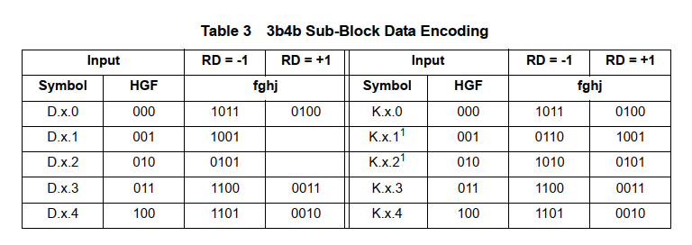

SerDes_PCS
本文最后更新于：2024年4月30日 下午
- 参考
- https://zhuanlan.zhihu.com/p/166179584
- https://zhuanlan.zhihu.com/p/446246685
- https://blog.csdn.net/Pieces_thinking/article/details/88849228
- https://blog.csdn.net/Pieces_thinking/article/details/119881292
- https://www.mindshare.com/files/resources/mindshare_pcie_elastic_buffer.pdf
- https://zhuanlan.zhihu.com/p/159452714
1. 8B/10B 编解码电路
- 对于大部分高速串行接口，在串行链路上会加入一个AC耦合电容，除了耦合电容，交流耦合器还需一个RC组成的高通滤波器，如下图所示。
- 当输入信号多个周期布发生变化时，信号电平值可能会发生衰减，发生误码。
- 对于输入信号变化较快的情况，衰减不明显，不会发生误码的情况。
高速串行接口为什么需要AC 耦合电容？
- 如果两个通信系统的供电电压不一致，那么插入AC 耦合电容，可以隔直流，使交流信号归到DC=0轴。
- AC耦合电容可以提供 直流偏压以及过流保护。
- 信号传输时，可能会有直流分量被串扰进去，经过AC 耦合电容，眼图更好。
编码方式详解
- 8B/10B 编码 实现
所有的1/0的个数不会超过6个，连续的1/0的个数不会超过4个。
- 有256个数据码以及12个K码控制码，这样数据码和控制码不会重合。
编码前的数据以字节为单位，数据从高位到低位，分别用HGFEDCBA表示.
- 将该8bit数据分为两部分，其中低5bit进行5B/6B编码，高3bit进行3B/4B编码。
- 下面Table2 为5B/6B 编码表格
- D命名方式与下面介绍的K码相同。
- 表中的RD为 Running Disparity，是对编码后数据Disparity的统计。
- 当为+1时，表示1比0多，当为-1时，表示0比1多。
- RD的两个值对应着两种编码方式，选择哪种编码方式由当前RD值决定，举例如下。
- 当前RD值为负，那么此时输入按照RD=-1方式编码；同时检验当前编码是否为完美编码（0和1的个数相同），如果是完美编码，那么保持RD的极性不变。
- 对于RD值为正数的，编码方式与上面一致。
- 根据表中的编码结果，可以看到
1的个数和0的个数的差值Disparity只有三种：+2/-2/0.Disparity=0时即是完美编码，此时保持RD不变就可以。

Comma (K) 码
- 接收到的串行数据流需要经过串并转换器进行转换，K码中有些就是用来判断每个字节数据边界的。举例：K28.5(0xBC).
- 接收器在输入的数据流中搜寻特定的比特序列，如果找到该序列，那么解串器根据Comma码调整字节边界。
- 考虑到正常传输的数据中可能也有K码的数值（例如0xBC），一般通过一根额外的控制线来进行区分当前传输的是K码还是数据，再分别按照各自的编码方式进行编码。
- K码 (Comma)字符 Kx.y 的命名规则如下:
- x：低 5bit 数据十进制数值。
- y：高 3bit 数据十进制数值。
- 举例 K28.5：
8'b101_11100.
- 接收到的串行数据流需要经过串并转换器进行转换，K码中有些就是用来判断每个字节数据边界的。举例：K28.5(0xBC).
- 8B/10B 编码 实现
所有的1/0的个数不会超过6个，连续的1/0的个数不会超过4个。
2. 扰码 (Scrambing)
2.1 关于扰码
扰码的作用
一些重复出现的序列，频域上为高频离散频谱，会产生较强的EMI。但当经过扰码后，数据被随机化，EMI噪声会被大大减弱。
由于扰码可以让功率谱分布更为平滑和均匀，因此可以一定程度上减少高频串扰。
加扰也可以解决上面提到的直流平衡问题，并且不需要像8B/10B编码技术一样，增加带宽的开销。
例如，8B时，需要2.5Gb的带宽，那么编码成10B时，就需要3.125Gbps ((2.5/8)*10) 的线速率。
但是8B/10B等线路编码方案可以提供其他任务是扰码无法实现的。
- 字对齐
- 时钟校正机制
- 通道绑定机制
- 子通道创建
尽管上面后三种任务某些情况并不需要，但是肯定会需要字对齐。扰码也有自己的字对齐方式。
如下图，可以在划分一些数据边界值用于字对齐等控制，该部分控制字不可用于数据传输。
具体实现可以用LFSR电路实现，用于产生伪随机序列x(n)，并与串行输入的数据y(n)进行异或操作得到z(n)，从而实现输入数据的随机化。
解扰电路：使用扰码后的数据z(n)与LFSR产生的随机序列x(n)进行异或之后得到原数据y(n).
2.2 LFSR
LFSR有三个可配置的参数
- 寄存器中的位数 n
- 寄存器初始值 seed
- 异或抽头 taps 的位置
举例如下图所示。
- 对于不同的seed值以及taps位置，输出值周期会不同。
3. 弹性缓存(Elastic Buffer)
3.1 简介
- 异步FIFO & Elastic Buffer
- 异步FIFO有空满信号，当满信号有效时，会反压前级逻辑，不让其继续向FIFO中写入数据。当空信号有效时，会通知后级逻辑，不让继续进行读操作。
- Elastic Buffer 要求数据不断流入不断流出，不能发生前面的反压前级或通知后级阻塞数据的写入/读出。
- 对于SerDes RX端，存在两个时钟域
- 一个是通过CDR从数据流中解析出来的时钟，该时钟一般用于数据采样，使用该时钟向Buffer中写入数据。
- 另一个是RX端本地的时钟信号，用于RX其它逻辑，并用于从Buffer中读取数据。
- 在第1节中，有提到SerDes TX/RX
两个时钟之间可以有几百个ppm的频差，频率相近，数据会不断从写时钟域流向读时钟域。
- 可以通过Elastic Buffer，其自身会丢弃或插入数据 来补偿读写时钟之间的频率/相位差。
- 应用Elastic Buffer 的总线协议会定义特定的 Symbol 用来丢弃或者插入，比如 PCIe协议的SKP / Ethernet协议的IDLE。
3.2 具体设计
- 假设条件
- Ethernet协议中，使用 Symbol：IDLE 来做时钟频率/相位的补偿。
- 数据位宽：10bit
- 采样时钟：125M
- 读写时钟之间频率差最高限制在：±300ppm
- Buffer的深度计算
- 计算最差时钟周期差
- 根据上面的假设条件，可以计算得到频率范围：124.9625M~125.0375M。以最差情况看，写时钟为124.9625MHz (8.0024ns)，读时钟为125.0375MHz (7.9976ns)。
- 两者之间的时钟周期差为0.0048ns。即：每7.9976/0.0048=1666 个Cycle 就会有一次时钟周期漂移。
- 计算每次发送一个包内会发生时钟周期漂移的次数来确定FIFO的深度。
- 按照Ethernet最长的包长1500Bytes计算，一个包会跨越 (1500*8)bit/10bit=1200个Cycle。所以一个Ethernet包至多有一次时钟周期的漂移。
- 如果我们想在每次漂移之后都做时钟补偿，那么FIFO的深度为4即可，想留一些裕量则可以考虑更大的深度，如8，16。
- 计算最差时钟周期差
- 何时丢弃/插入Symbol
- 以FIFO深度为4为例，在FIFO正常的工作状态，我们会让FIFO处于半满状态。即FIFO内存有2个数据。
- 基于此，我们可以设置两个阈值：1和3.
- 当FIFO中的数据个数 ≥ 3时，我们认为写时钟过快，需要丢弃IDLE字符。
- 当FIFO中的数据个数 ≤ 1时，我们认为读时钟过快，需要插入IDLE字符。
- 考虑到Ethernet协议要求在两个包间隔处，发送IDLE字符，因此前面介绍的丢弃/插入可以在间隔处实现。
- 总体实现流程
- （1）FIFO上电后达到半满状态。
- （2）一个新的Ethernet数据包到来，在传输这个数据包期间，FIFO的读写时钟发生了一次漂移，写时钟更快，导致FIFO内存放的数据个数变为3.
- （3）这个包传输结束后，TX端开始发送IDLE字符。RX端检测到IDLE字符后，同时查看FIFO中数据的个数，发现是3.
- （4）此时认为写时钟快了，丢弃当前收到的IDLE字符，让FIFO先将数据个数由3变成2.
- （5）之后恢复正常工作。
- 插入与上面类似，也是在间隔时进行操作。
4. 时钟纠正
- 这篇文章 中有介绍时钟纠正电路的用途以及实现方式。个人理解起来觉得与2.3.3节介绍的弹性缓存相同原理。
5. 通道绑定
- 在第1节中有介绍，SerDes 可能会将多个Channel绑定成一个Group，共享一个PLL资源。
- 如果需要移动的数据量很多，需要一个组内多个Channel一起传输。但是通道之间的偏斜可能会导致同一时刻发送的数据在不同时刻到达，导致采样不到正确的对齐数据。
- 通过通道绑定的方法可以调整，来保证采样到正确的对齐数据。实现方式如下：
- 需要设置特殊的有序集(Order Set)来进行标识。
- 每个通道都会传输这个特定的通道绑定字符，当接收到该序列之后，不同通道可以确认它们之间的偏移大小。利用FIFO来消除通道之间的偏移。
6. 数据传输格式 - 数据包
- 将千兆串行链路上传输的数据嵌入在数据包中，那么这个数据包中需要包含以下内容。
- 2.3.1节中有介绍，部分K码可以用作判断一个字节的开始/结尾的标记。
- 对于时钟纠正电路，需要插入/丢弃特殊的有序集(Order Set)
来进行时钟纠正。
- 这里特殊的有序集与2.3.3.1节中的Symbol相同含义，PCIE中指定为SKP。
- 空闲Symbol，当没有信息需要发送时，会继续发送空闲Symbol。
- 目的：连续传输可以确保CDR时钟和接收端PLL锁定在CDR时钟频率附近；链路保持对齐。
SerDes_PCS
http://binbinqian.cn/2023/12/20/SerDes_PCS/